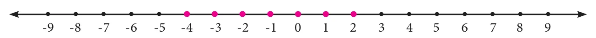

- Given that \(x \ge y\). Fill in the blanks with suitable inequality signs.
- \(y \;\square\; x\)
- \(x + 6 \;\square\; y + 6\)
- \(x^2 \;\square\; xy\)
- \(-xy \;\square\; -y^2\)
- \(x - y \;\square\; 0\)
- Say True or False.
- Linear inequation has almost one solution.
- When \(x\) is an integer, the solutions for \(x \le 0\) are \(-1, -2, \ldots\)
- An inequation, \(-3 < x < -1\), where \(x\) is an integer, cannot be represented in the number line.
- \(x < -y\) can be rewritten as \(-y < x\)
- Solve the following inequations.
- \(x \le 7\), where \(x\) is a natural number.
- \(x - 6 < 1\), where \(x\) is a natural number.
- \(2a + 3 \le 13\), where \(a\) is a whole number.
- \(6x - 7 \ge 35\), where \(x\) is an integer.
- \(4x - 9 > -33\), where \(x\) is a negative integer.
- Solve the following inequations and represent the solution on the number line:
- \(k > -5\), \(k\) is an integer.
- \(-7 \le y\), \(y\) is a negative integer.
- \(-4 \le x \le 8\), \(x\) is a natural number
- \(3m - 5 \le 2m + 1\), \(m\) is an integer.
- An artist can spend any amount between ₹ 80 to ₹ 200 on brushes. If cost of each brush is ₹ 5 and there are 6 brushes in each packet, then how many packets of brush can the artist buy?
Objective Type Questions
- The solutions of the inequation \(3 \le p \le 6\) are (where \(p\) is a natural number)
- 4, 5 and 6
- 3, 4 and 5
- 4 and 5
- 3, 4, 5 and 6
- The solution of the inequation \(5x + 5 \le 15\) are (where \(x\) is a natural number)
- 1 and 2
- 0, 1 and 2
- 2, 1, 0, \(-1\), \(-2\)..
- 1, 2, 3..
- The cost of one pen is ₹ 8 and it is available in a sealed pack of 10 pens. If Swetha has only ₹ 500, how many packs of pens can she buy at the maximum?
- 10
- 5
- 6
- 8
- The inequation that is represented on the number line as shown below is \(\underline{\qquad}\)

- \(-4 < x < 0\)
- \(-4 \le x \le 0\)
- \(-4 < x \le 0\)
- \(-4 \le x < 0\)